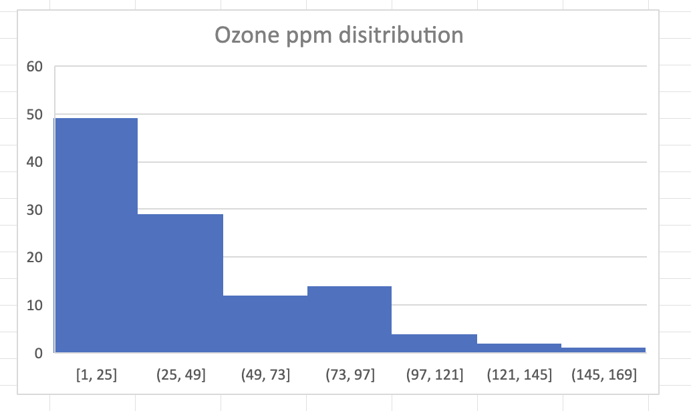
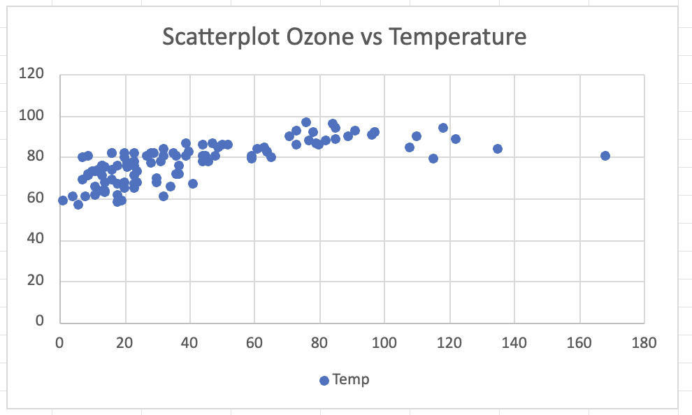
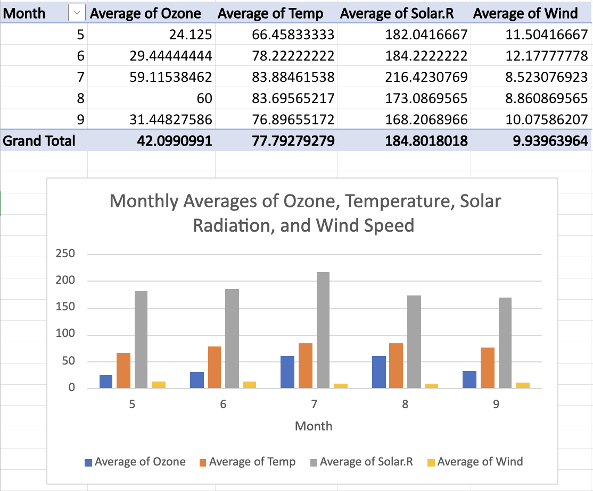
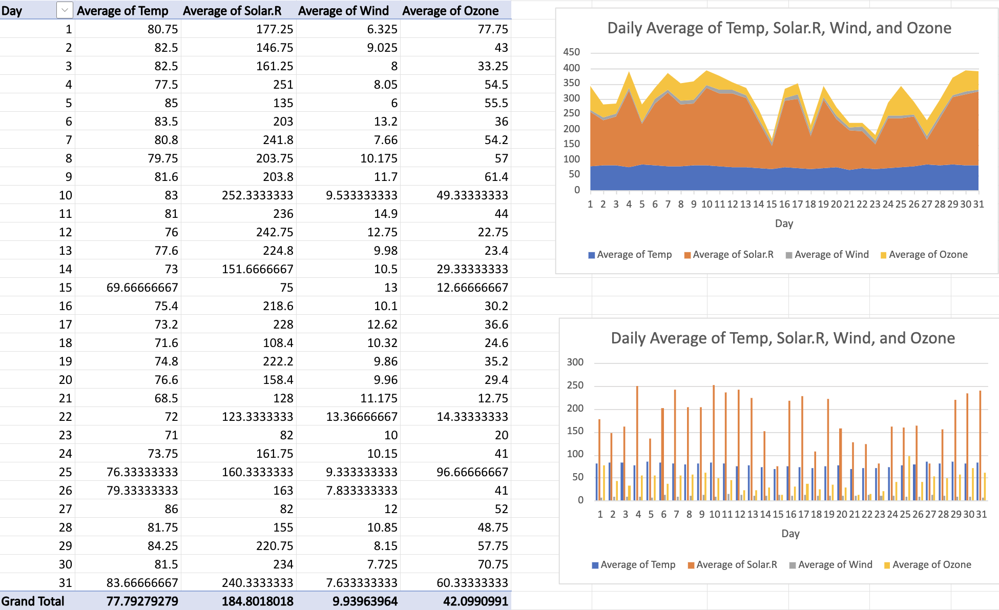
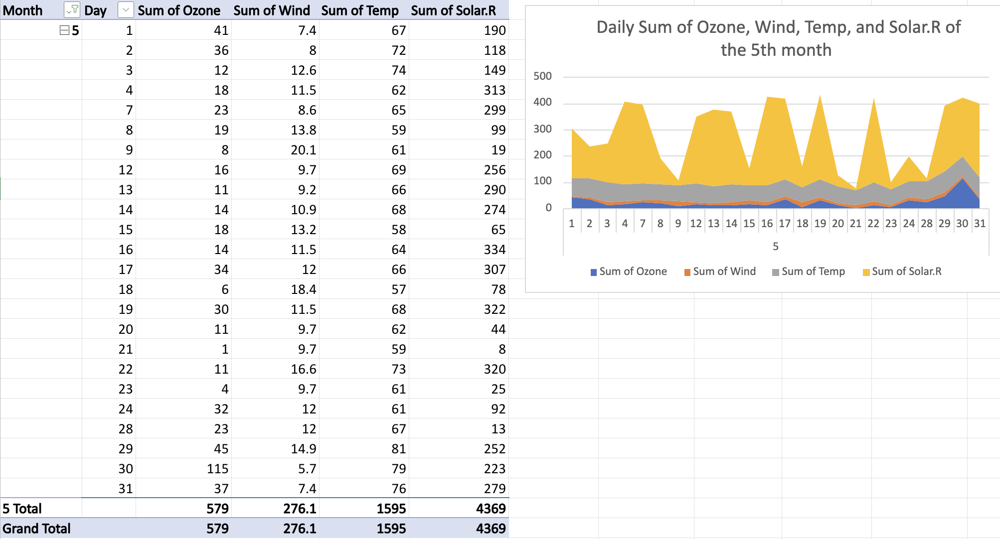

2 Abigail Tako
This page contains all of Abigail Takon submissions this semester organized into different sections.
2.1 Wednesday
2.1.1 Week 1
2.1.2 Week 2
Histogram
In week 2, data sets that I am using is air quality data set. After cleaning the data set explained below, select all the data and insert the histogram chart to create the visualization of the data. The variables for the histogram chart is only the ozone. From the histogram, it shows the distribution of the ozone, most of the ozone are 1 to 25 ppm.

clean data
First, from the data, we are going to clean the data, by removing those that are have the value NA or not available.
1. Select all the data, and search for the filter.
2. Then, it will appear the drop down menu for each column, select the drop down menu on the first column which is Ozone
3. Select NA. To remove it, select all from the row that has NA until the bottom and select delete rows 6-151.
4. Select the drop down menu on column Ozone, select all and apply, it will give back the table, however there’s no NA anymore on the Ozone.
Looking at the data, there still some NA on the column B for Solar.R. Repeat the way just like before. Next, to make it earlier to read the data, sort the day and month to be in order. Select the column for month, click the sort from smallest to largest, do the same for day.
Scatter plot
Using the air quality data sets, click on column A(ozone) and D (temperature) to show the correlation between both of them. After clicking on both column, I’m going to insert the scatter plot. The scatter plot shows a relationship between Ozone levels (y-axis) and Temperature (x-axis). The general trend indicates a positive correlation: as the temperature increases, the ozone level tends to increase as well.

Pivot Table & Chart
To make a pivot table and chart, first select all the data, and click insert. On the let corner, it will appear the pivot menu, press that and select the create own pivot table. I select and drag ozone, temperature, Solar. R, and Wind to the value, for the row I’ll put only the month. Then, I change the value field settings to average, this is to provide the average of ozone, temperature, Solar. R, and Wind monthly. After doing the pivot table, select that pivot table and insert the pivot chart to create the visualization.

From the pivot table and chart above, it shows that ozone levels appear to increase with higher temperature and solar radiation but decrease with higher wind speeds.
Next, I’m going to provide another pivot table, that shows the average of ozone, temperature, Solar. R, and Wind daily from day 1 to 31. To do that, select again the first table, the one that was cleaned, then again select the pivot table and choose the create own pivot table.
I select and drag ozone, temperature, Solar. R, and Wind to the value, for the row I’ll put only the day. Then, I change the value field settings to average, this is to provide the average of ozone, temperature, Solar. R, and Wind per day.
Now, I’m going to add the pivot chart from that new pivot table. I choose two charts, from those two I can create conclusion and better visualizations.
From the chart presented below, the average daily of Temperature and Wind each have a positive correlation, however not with the average daily of Solar. R and the Ozone. Also, on day 15 it shows the lowest average of ozone and solar. r.

Third, I’m going to make another pivot table that can show more detailed on each month per day.I’m going to choose to present the 5th month, so I’m going to press the drop down menu from the column “month” and select only the 5. Next, the table will only provide the information from month 5, day 1-31 and the sum of ozone, wind, temp, and solar.r.

From the chart, we can see that, on day 30 from the 5th month, it shows the highest sum of ozone.
Individual Project
** Who collected the data**
The source that I chose is National Transportation Library (NTL) Data. There are lots of data sets from NTL, which can be access through https://ntl.bts.gov/ntl. Data set that I chose is motor vehicle safety. This data set is collected by U.S. Department of Transportation, National Highway Traffic Safety Administration, National Center for Statistics and Analysis, and Fatality Analysis Reporting System (FARS) Database. I’m interested in this one, because it is critical to understand trends in road safety, which is a major public concern. The data that I collect is from this link https://www.bts.gov/content/motor-vehicle-safety-data.
Purpose
Monitoring the trends in motor vehicle safety in the U.S., including fatalities, injuries, and crashes. It serves to assess the effectiveness of safety regulations, technology advancements, and policy interventions over time. From the visualizations, it can improve the safety measures and highlight the effectiveness of road safety interventions over the years, making it highly valuable for assessing long-term changes in traffic-related fatalities and injuries.
Variables
Fatalities - total number of deaths from motor vehicle crashes
Injured persons - total number of people injured in motor vehicle accidents
Crashes - total number of motor vehicle crashes
Vehicles miles traveled - total number of miles driven by vehicles
2.1.3 Week 3
2.2 Friday
2.2.1 Week 1
2.2.2 Week 2
Histogram
In week 2, data sets that I am using is air quality data set. After cleaning the data set explained below, select all the data and insert the histogram chart to create the visualization of the data. The variables for the histogram chart is only the ozone. From the histogram, it shows the distribution of the ozone, most of the ozone are 1 to 25 ppm.
clean data
First, from the data, we are going to clean the data, by removing those that are have the value NA or not available.
1. Select all the data, and search for the filter.
2. Then, it will appear the drop down menu for each column, select the drop down menu on the first column which is Ozone
3. Select NA. To remove it, select all from the row that has NA until the bottom and select delete rows 6-151.
4. Select the drop down menu on column Ozone, select all and apply, it will give back the table, however there’s no NA anymore on the Ozone.
Looking at the data, there still some NA on the column B for Solar.R. Repeat the way just like before. Next, to make it earlier to read the data, sort the day and month to be in order. Select the column for month, click the sort from smallest to largest, do the same for day.
Scatter plot
Using the air quality data sets, click on column A(ozone) and D (temperature) to show the correlation between both of them. After clicking on both column, I’m going to insert the scatter plot. The scatter plot shows a relationship between Ozone levels (y-axis) and Temperature (x-axis). The general trend indicates a positive correlation: as the temperature increases, the ozone level tends to increase as well.
Pivot Table & Chart
To make a pivot table and chart, first select all the data, and click insert. On the let corner, it will appear the pivot menu, press that and select the create own pivot table. I select and drag ozone, temperature, Solar. R, and Wind to the value, for the row I’ll put only the month. Then, I change the value field settings to average, this is to provide the average of ozone, temperature, Solar. R, and Wind monthly. After doing the pivot table, select that pivot table and insert the pivot chart to create the visualization.
From the pivot table and chart above, it shows that ozone levels appear to increase with higher temperature and solar radiation but decrease with higher wind speeds.
Next, I’m going to provide another pivot table, that shows the average of ozone, temperature, Solar. R, and Wind daily from day 1 to 31. To do that, select again the first table, the one that was cleaned, then again select the pivot table and choose the create own pivot table.
I select and drag ozone, temperature, Solar. R, and Wind to the value, for the row I’ll put only the day. Then, I change the value field settings to average, this is to provide the average of ozone, temperature, Solar. R, and Wind per day.
Now, I’m going to add the pivot chart from that new pivot table. I choose two charts, from those two I can create conclusion and better visualizations.
From the chart presented below, the average daily of Temperature and Wind each have a positive correlation, however not with the average daily of Solar. R and the Ozone. Also, on day 15 it shows the lowest average of ozone and solar. r.
Third, I’m going to make another pivot table that can show more detailed on each month per day.I’m going to choose to present the 5th month, so I’m going to press the drop down menu from the column “month” and select only the 5. Next, the table will only provide the information from month 5, day 1-31 and the sum of ozone, wind, temp, and solar.r.
From the chart, we can see that, on day 30 from the 5th month, it shows the highest sum of ozone.
Individual Project
Who collected the data
The source that I chose is National Transportation Library (NTL) Data. There are lots of data sets from NTL, which can be access through https://ntl.bts.gov/ntl. Data set that I chose is motor vehicle safety. This data set is collected by U.S. Department of Transportation, National Highway Traffic Safety Administration, National Center for Statistics and Analysis, and Fatality Analysis Reporting System (FARS) Database. I’m interested in this one, because it is critical to understand trends in road safety, which is a major public concern. The data that I collect is from this link https://www.bts.gov/content/motor-vehicle-safety-data.
Purpose
Monitoring the trends in motor vehicle safety in the U.S., including fatalities, injuries, and crashes. It serves to assess the effectiveness of safety regulations, technology advancements, and policy interventions over time. From the visualizations, it can improve the safety measures and highlight the effectiveness of road safety interventions over the years, making it highly valuable for assessing long-term changes in traffic-related fatalities and injuries.
Variables
Fatalities - total number of deaths from motor vehicle crashes
Injured persons - total number of people injured in motor vehicle accidents
Crashes - total number of motor vehicle crashes
Vehicles miles traveled - total number of miles driven by vehicles